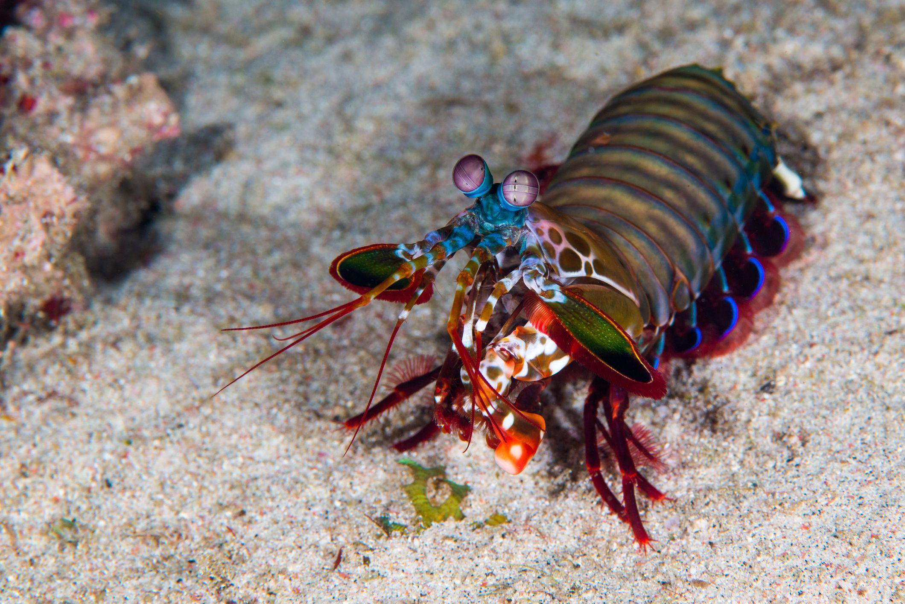

Olhos fotorreceptores

Os olhos desse animal são únicos, eles tem a visão mais completa do reino animal. Enquanto os seres humanos têm três tipos de fotorreceptores, os olhos do camarão mantis têm entre 12 e 16 tipos de células fotorreceptoras. Algumas espécies podem até ajustar a sensibilidade de sua visão de cores.O aglomerado de fotorreceptores, chamado ommatidia, estão dispostos em filas paralelas em três regiões. Isso dá a cada percepção de profundidade olho e visão trinocular.
Camarões louva pode perceber comprimentos de onda de fundo ultravioleta através do espectro visível e no vermelho longínquo. Eles também podem ver a luz polarizada. Algumas espécies podem perceber luz polarizada circularmente-uma capacidade não encontrada em qualquer outras espécies animais. Sua visão excepcional dá o camarão mantis uma vantagem de sobrevivência em um ambiente que pode variar de brilhante para escuro e lhes permite ver e distância indicador para cintilante ou objetos translúcidos.
Garras fortes

Medindo cerca de 18 cm e habitando águas claras e rasas dos recifes, esse animal de colorido intenso é bastante apreciado no Aquarismo. Excelente golpeador, o tamarutaca "soca" suas presas com suas garras com uma força de até 2,5 mil vezes seu peso em menos de 800 microsegundos. Este nocaute equivale a um tiro de pistola calibre 22.
A maior parte deles são caçadores solitários e reclusos. As garras são tão rápidas que fervem a água entre o camarão e sua presa, produzindo bolhas de cavitação. Essas bolhas tem uma força instantânea de 1500 Newtons. Assim, mesmo se o camarão erra o alvo, a onda de choque pode atordoar ou matá-lo. As bolhas também produz luz fraca, conhecido como sonoluminescência. As presas típicas incluem peixe, caracóis, caranguejo, e ostras e outros mariscos. Camarões Mantis também comem membros de sua própria espécie.
Inteligência especial

Camarões Mantis são muito inteligentes. Eles reconhecer e lembram outros indivíduos por visão e pelo cheiro, e eles demonstram uma capacidade de aprender. Os animais têm um comportamento social complexo, que inclui a luta ritualizada e atividades coordenadas entre os membros de um casal monogâmico. Eles usam fluorescentes padrões para sinalizar uns aos outros e, possivelmente, outras espécies.